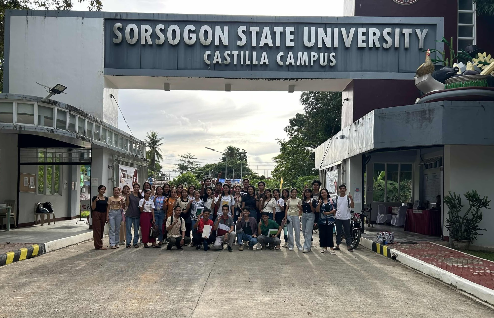

Overview
A province that values learning
Sorsogon has a well-developed education system spanning public and private institutions from elementary through tertiary level. The province maintains a literacy rate of over 97% — among the highest in the Bicol region.
The Department of Education oversees public schools in all 16 cities and municipalities, while the provincial government supplements national programs with scholarships and learning support for qualified students.

Institutions
Key educational institutions
| Institution | Type | Location | Focus |
|---|---|---|---|
| Sorsogon State University (SSU) | State University | Sorsogon City | Engineering, Agriculture, Education, Business |
| Bicol University – Gubat Campus | State University | Gubat | Agriculture, Fisheries |
| Saint Anthony's College | Private College | Sorsogon City | Education, Business, Nursing |
| TESDA Provincial Office | Technical-Vocational | Sorsogon City | Skills training, livelihood programs |
| Sorsogon City National High School | Public High School | Sorsogon City | Science, Technology, General |
Programs
Support & scholarships
Provincial Scholarship
Grants for qualified Sorsoganon students enrolled in state colleges and universities within and outside the province.
Alternative Learning
DepEd's ALS program provides flexible education pathways to out-of-school youth and adults.
ICT Integration
Computer labs and internet access installed in many public schools under the national digital education drive.
Agricultural Education
SSU and BU campuses offer agriculture and fisheries programs tailored to the province's primary industries.